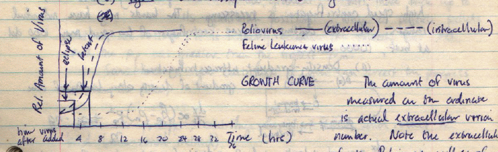
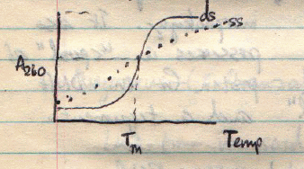
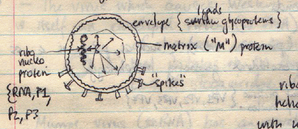
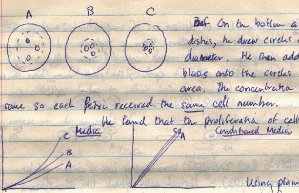
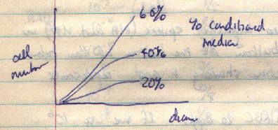
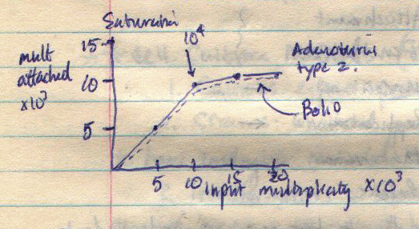
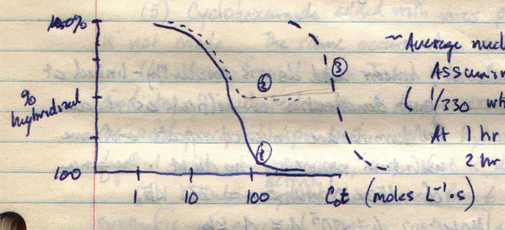
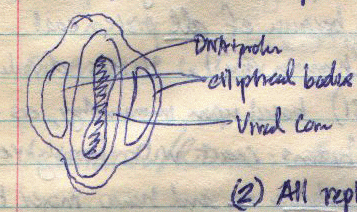
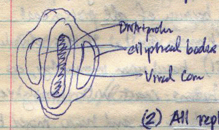

Animal Virology Lecture Notes
These lecture notes from the course Veterinary Microbiology 128 taught at
University of California, Davis in Fall 1982 (by Dwight Hirsh?) with notes taken
by S. M. Halloran.
24 Sep 1982
Grading in course is by three examinations, two midterms and one final.
History
Viruses first became known specifically through the disease smallpox.
They were known as early as 10th century B.C. by the Chinese, who kept a record
of them. The Chinese treated it with lesions from the infected individuals to
scarified skin of the uninfected.
Polio was recorded in Egyptian hieroglyphics. In 1798 Jenner was able to
prevent smallpox by rubbing cowpox exudate into skin. Pasteur developed a method
for the treatment of rabies.
In the 1890s many tobacco plants mottled their leaves due to TMV. Scientists
had developed a porous bacterial filter made from clay, and the sterile
solution still contained infectious agent. Viruses were then known
as a filterable infectious agent, or a filterable virus. Later
they became known as just viruses.
In 1898 Loeffler and Frosch demonstrated that hoof-and-mouth disease
in cattle was a filterable infectious agent (a virus).
1911: Rous demonstrated that ground-up tissue from a chicken sarcoma
was etiologically a virus, since it caused chicken sarcoma.
1917: Bacteria were discovered to have their own viral agents (phages).
Methods to culture or “grow” viruses on artificial media
were not successful. In 1935 Wendell Stanley knew chemists could crystallize
proteins, so why not any filterable agent: so he successfully crystallized
TMV. It was shown to be 95% protein and 5% nucleic acid. He assumed that
it was the protein that conferred virulence, largely because of its sheer
mass.
Hershey & Chase (1952) refuted this theory of the protein conferring
virulence with experiments making use of isotopic labels 35S and
32P. They infected bacteria with phage and the isolated progeny had
32P-labeled nucleic acid but no 35S-labeled protein. When
they added the labeled phage, after a few minutes they shook and stirred the
solution violently to strip off the phage. They filtered it and in the
resuspended filtered part they found 32P-labeled bacteria and the
filtrate contained 32S-labeled protein. To show infectivity was not
lost, the 32P-labeled bacteria were cultured for 30 min and lysed
with the new progeny.
27 Sep 1982
Real proof that DNA (nucleic acid) conferred virulence was when experiments
using naked DNA to transform the cell were done. A. Wulff (1957) described
the characteristics of a virus at this point in time:
- it required intracellular conditions
- the genome is composed of either RNA or DNA, but never both.
Some instances occur when both nucleic acids are found, but only one
type represents the genome
- there is no binary growth or fission; it is rather an assembly of
parts
- there is no internal complement of energy-yielding structures or
substances for genome replication, transcription, or translation;
there is total dependence on the host
Phases of Infection
The following are described as the phases of viral infection:
- Attachment Phase. This event is marked by a specific ligand
binding of moieties on the viral surface and the cell membrane surface
receptor.
- Penetration Phase. There are three types of penetration:
- direct: when the viral genome itself is admitted
- fusion: when the surface of virus and cell fuse, and then
the genome is admitted
- viropexis: when the attachment process causes a rearrangment
of the cell membrane components, forming a “coated pit,”
and finally an intracellular vesicle (reminiscent of phagocyte action)
containing virus. The virus then penetrates the cytoplasm from within
the cell
- Replication. The nucleic acid genome must be replicated by
the host machinery.
- Release. Once assembled the virion may be released via:
- budding off the cell membrane surface (most common)
- lysis of the cell, killing it, with millions of virions released

The figure at left shows the characteristics of a viral growth curve. The amount
of virus measured on the ordinate is the actual extracellular virion
number. Note the extracellular curve of polio as well as of the feline leukemia
virus will lag the intracellular count.
Certain time periods describe the growth curve. The eclipse phase is the
time after addition to first detection of intracellular virus. The latent
phase is the time after addition to the first detection of the extracellular
phase.
Virus Purification
After knowing specifics of the growth curve, purificiation becomes necessary to
observe more properties of a single virus. Why purify? Because it is necessary
to isolate the etiological agent (the virus) causing pathogenic reactions from
contaminating material.
The following methods are used:
- Differentital centrifugation. The rpm (rotational energy)
and time spent centrifuging will separate particles based largely
upon sedimentation differences (densities and size)
- Concentration (precipitation) with ammonium sulfate or polyethylene
glycol. Because of the hydrophilicity of these substances, they
possess a large sphere of hydration and will take aqueous solvent from
the viral particles, resulting in precipitation.
- Ultracentrifugation. If centrifuging according to rate of
particle sedimentation, the following formula is of importance:
| dx
| ∝
| (ρp − ρm)
Rp2 ng
|
| dt
| η
|
where dx/dt is the particle or sedimentation velocity,
ρp is the density of the particle, ρm is the
density of the medium, Rp is the particle radius, ng is
the number of gravities (g = 9.81 m/s2 and n is the
integer representing the factor), and η is the medium viscosity. It should
be noted that when ρp = ρm, then dx/dt = 0
and the particle stops movement. This is the isopycnic condition.
In the last method, consider the example of sucrose gradient purification.
Suppose a virus particle has a density of 1.18 g/ml (ρp = 1.18),
which is typical of the feline leukemia virus. A 10% sucrose solution has a
ρm = 1.09 and 50% sucrose has a ρm = 1.22. Thus a
10-50% sucrose gradient will produce a band for feline leukemia virus above the
bottom of the tube. Poliovirus has a ρp = 1.33, and will pellet
at the bottom of the tube.
29 Sep 1982
In summarizing the viral purification methods, centrifugation is often done.
When virus density is far greater than the medium, it is often useful to use a
rate zonal method since the only way to recover virus is by pelleting.
Other pelletable substances can be removed by spinning at various times to
pellet these and keep it separate from virus.
Viral Morphology
Viral shape and appearance is revealed ultramicroscopically by electron
microscopy.
Tobacco mosaic (TMV) is a root-shaped, unenveloped virus. It has helical
symmetry with proteins arranged in a helix and the RNA tucked within.
Poliovirus is single-stranded (ss) RNA virus. Its virion is icosahedral: it has
20 faces and 12 vertices, and the symmetry is cubic. When describing this and
other virus with geometric bodies of this type, it is useful to speak in terms
of rotational symmetry. A square has 4-fold rotational symmetry. A
triangle 3-fold. An icosahedron has 5:3:2 rotational symmetry, that it 3 levels
of rotational symmetry.
The virion (virus bodies) are usually composed of a basic set of proteins
which form the coats or the bodies of the virus. Thus the protein or
proteins represent the structural subunits. A single protein
or set of them then aggregate or join together or assemble to form
20 such aggregates, in the case of the icosahedral virus, and this
forms the morphological unit, or a capsomer. The viral
body or coat is also called a cap and the suffix -mer
means “part” or “unit.” Thus the word
capsomer, means a part of the cap. Poliovirus has 32 capsomers.
The herpesvirus is a ds DNA virus, composed of an icosahedral
nucleocapsid (like poliovirus) and an envelope. If the
envelope is removed, the virus loses the ability to infect. The envelope
is composed of a lipoprotein, glycoprotein, lipid, and other minor
constituents.
The virus that causes Western equine encephalitis is an enveloped
ss RNA virus. The envelope is composed of lipoprotein that wraps so
tightly around the nucleocapside that the membrane assumes the shape
of the nucleocapsid. This virus belongs to a class called the
Togaviridae (the robed viruses).
The mumps virus is a ss RNA virus whose envelope surrounds helical
RNA around a helical nucleocapsid. It belongs to the Paramyxoviridae.
The rabies virus (Rhabdoviridae) is an ss RNA virus with an enveloped
helical nucleocapsid and RNA like the mumps virus.
Poxvirus is called a complex virus largely because little is
known about its nucleocapsid packaging.
1 Oct 1982
A review of rate zonal and isopycnic sedimentation was done because of
its importance to virus purification and probably some confusion about
how it is used.
Viral Content & Composition
It is know that viruses are composed largely of protein and nucleic
acid (either DNA or RNA).
Determining whether a virus is single- or double-stranded is relatively
straightforward. One can use:
- endonucleases that are specific for either single- or double-stranded
DNA or RNA can reveal strandedness and type
-  a plot of the
absorbance at 260 nm (A260) against the temperature (see figure at
right) during the heating of the virus will reveal strandedness: double-stranded
nucleic acid shows a sharp transition (increase) in A260 whereas
single-stranded nucleic acid shows a more gradual increase (ss RNA or DNA shows
an increase because there is still base-pairing of the single strand by
stem-loops)
In addition, the nucleic acid genome of the virus could be linear or
cyclic. With circular DNA or RNA, the end-to-end is covalently bonded.
The Picornaviridae are ss linear RNA viruses with an icosahedral morphology.
Note that “picornavirus” is a formation of three words: pico rna
virus. Pico comes from the prefix referring to a quantity meaning
“10−12” but which really means “very small or
tiny in quantity or mass.” The meaning of rna and virus are
obvious. Poliovirus is a member of this viral family, and its nucleocapsid is
composed of four different proteins: VP1, VP2, VP3, and VP4.
The Togaviridae include a member causing Western equine encephalitis
and are ss linear RNA viruses with a tightly wrapped envelope around
an icosahedral nucleocapsid. The envelope is a complex of lipoprotein
and often referred to as a “biological membrane.” A single
protein subunit makes up the shell nucleocapsid. The lipid composition
is phosphatides, free fatty acids (FFAs), cholesterol, and triacylglycerols
(TAGs). This invariably indicates that the lipid components of the
envelope are of host origin but that the proteins of the envelope are
viral origin. Sometimes carbohydrates are found on the proteins, indicating
that some proteins are glycoproteins.
The Herpesviridae are ds linear DNA viruses with an enveloped icosahedral
morphology. The nucleocapsid surroundes the genome and is composed of 10
different proteins. The DNA itself is wound around a spool of protein and
contained by a tegument. The envelope itself is composed of lipoprotein
and 8-12 different types of glycoprotein.

The influenza virus is a member of the Myxoviridae, which are linear
ss RNA viruses. The Type A influenza virus is a spherical particle
which appears under the electron microscope to have the following features:
- spikes with two different configurations, one simply rod-shaped, and the
other T-shaped
- a matrix “M” protein
- a nucleocapsid composed of ribonucleoprotein with 8 helically looped
units, each with a unique sequence of RNA. Each segment of RNA has three
proteins wrapping it called P1, P2, and P3. There is also an N protein.
- A virion-bound or -associated enzyme is attached to the ribonucleoprotein,
one per RNA segments (of the 8 segments), and it is a RNA-dependent
RNA polymerase.
The T-shaped envelope protein is associated with a neuraminidase
activity: this hydrolyzes sialic acid groups from the terminus of
oligosaccharides on glycoproteins. The rod-shaped envelope protein is a
hemagglutinin, but its principal function is to enable attachment to the
target cells, via the sialic acid groups of glycoproteins. The neuraminidase
removes sialic acids from mucopolysaccharides in the respiratory system to
enable better access to the receptor for penetration.
4 Oct 1982
Continuing the discussion of the influenza virus, it was shown that there is a
transcriptase enzyme associated with each RNA segment. This is an
RNA-dependent RNA polymerase. The enzymatic activity appears to be associated
with the P1 and P3 proteins, findings which can be determined by using
mutational studies. Each segment of RNA codes for a gene and polypeptide
(except for one nonstructural spacer).
When multiple influenza viruses infect a single cell (causing superinfection)
new permutations (assortments) of the 8 segments of the genome can be obtained.
This creates genetic variablility and also helps to narrow down the function of
these proteins.
In one study, virus was disaggregated with Triton X-100 and the proteins
purified. Rabbits were immunized against pure neuraminidase (NA) and the
hemagluttinating (HA) proteins, and the antisera from the rabbits incubated wtih
intact virions. When treated with anti-HA enzyme, infectivity was fully lost,
and when treated with anti-NA activity, it was reduced. When single base
mutations were done in the the HA gene, infectivity was lost, but when done in
the NA gene, infectivity was lost only if the virus was administered as an
aerosol.
HA purified by SDS-PAGE shows three subnits to the protein, which all have
approx. the same MW. When treated with 2-mercaptoethanol, one sees
two subunits per monomer.
The NA protein is composed of a pair of dimeric dimers in SDS, which are
then dispersed in reducing conditions.
When the mortality of influenza virus is plotted against year, it can be seen
that mortality is high about once every 11 years (going in 11-year cycles).
Mortality was high in 1933, 1946, 1957, 1968. When one also plots antigenic
change against year, one sees minor changes in amino acid from year to year
(antigenic drift) but in the years where mortality is high, the virus
acquires entirely new genomes (antigenic shift).
6 Oct 1982
Culturing and Assay of Viruses
The culturing of animal viruses requires cells which are targets. It is
speculated that bacterial cells can also be targets, but this is unproven. The
target cells can be made available in various ways:
- animals—a good, easy source
- embryonated eggs—or developing embryonic tissue
- tissue cell culture
Loeffler and Frosch actually used cattle to culture foot-and-mouth disease
making that rather expensive. Of course it is better to use smaller laboratory
animals.
The method involves isolating virus particles, then finding an inexpensive way
of propagating the virus, finding the right species and tissues as its targets.
It is also necessary to determine a suitable route of administration: direct
i.v. injection may not allow infection. Age of the host, if an animal, is
important: certain leukemia viruses are able to infect young (1-day old) mice,
but cannot infect mice at a later age. It is also essential to check for
contamination with other viruses: several re-isolation and re-infection cycles
may be necessary not only to purify virus through host infection, but also to
prove that it is the agent involved.
Embryonic Cells
Several factors should be considered when growing and purifying viruses
by the use of growing embryos.
- the age of the embryo
when using chick embryos, 10 d seems ideal
- route
sometimes intravenous administration works, but direct
injection into target tissue is perhaps the best
- tissue type
sometimes the egg membrane, a fluid, or the embryo itself is the best target
Morphological changes in cells due to viral infection are called the
cytopathic effect. This is seen as a “pock” of changed or
dead cells.
Testing for Viral Presence
Various useful tests are available for screening for the presence of viruses.
Many viruses have hemagglutinating ability, and so mixing fluid from a harvest
of viral culture with red blood cells (RBCs) can be done to observe for
hemagglutination.
When hemagglutination is not available as a quick screen, fluorescence
immunomicroscopy of infected cells is usually required, and requires expert
handling to assure the presence of infection.
Tissue Culture
The best types of cells are immature “blast” forms rather than
differentiated cells. Cancer cell lines, as established continuously dividing
cells, are quite useful are viral targets.
In 1940 Dulbecco took whole organs and cut them into blocks of tissue. He then
used a chemical cocktail of proteases and metal chelators (pronase, trypsin,
EDTA) to produce single cell suspensions. In 1942 these cell suspensions were
then spread on to glass and the cells preserved in a medium of glucose, amino
acids, serum (with a growth promoting set of factors), buffers, electrolytes,
vitamins, and minerals. To keep it microbe-free, antibiotics were also added to
the growth medium (if mycoplasma is a problem, gentamicin is a very broad
spectrum antibiotic that stops growth of gram-positive and -negative bacteria as
well as mycoplasma). These cells typically grow on the plate surface in a
monolayer and then stop growth once cells are confluent (show contact
inhibition).
Cells treated with trypsin and re-seeded (subcultured) will form another
monolayer possibly. After several passages (4 or 5) they lose their ability to
expand altogether. This could be due to accumulation of errors in ploidy
of these cells. Sometimes cells continue to divide for hundreds of passages,
and never seem to stop growing. These are immortalized continuous lines,
typically polyploid. They are no longer fit for developing vaccines, but useful
for other types of research.
In using tissue culture cells to cultivate virus, it is important to be able to
recognize the cytopathic effect (CPE) as well as other morphological changes;
- pyknosis, namely swelling and lysis
- vacuolation, often toxic chemicals accumulating in vacuoles and the
appearance of many vacuoles
- giant cell formation, an indication of the formation of
syncytial, multinucleated cells
- uncontrollable cell division
8 Oct 1982
A single infected cell will release upon lysis or by evagination about 1 million
total virus particles. Total particles is the sum of active and inactive
particles; an inactive particle is incapable of infection, possibly due to an
error in assembly or some other factor.
Cells transformed by virus show cytopathic changes ultrastructurally such
as intranuclear or intracytoplasmic inclusion bodies which can
be either acido- or basophilic, depending on the virus. These inclusion
bodies are usually assembly sites for the virus particles.
Many viruses do not release by cell lysis (cell death). They release by
budding such as the influenza virus. To detect infection and release of
influenza, a hemadsorption test is done, taking note of this virus'
hemagglutinating ability. Monolayers of infected cells are infected with virus,
and then RBCs are introduced and then washed away. RBC clusters that remain are
adsorbed to infected cells. As a control, cells can be pre-incubated with
anti-HA antibody before the RBCs are washed in, which would block the
hemagglutinating ability of this protein, and the monolayers should show no RBC
clusters.
Other detection methods include acridine orange dye: this fluorescent
dye stains ds RNA and DNA green, and ss RNA and DNA red. Visualization of either
color in the cytoplasm is a strong suggestion of viral infection.
Fluorescent Antibody. Purified virus is used to prepare neutralizing or
immunizing antibodies against it. The Ig is isolated and then covalently
attached to a fluorescent dye (such as rhodamine B sulfate). Infected cultured
cells are fixed in acetone (to make the cell membrane porous for
intracytoplasmic staining) and then the fluorochrome-labeled antibody is flooded
in the cells and then unbound material washed away. This is then viewed by
fluorescent microscope using long wave UV light source. When conducting such a
study, the use of a negative control (uninfected cells) is vital as a
point of comparison
Problems with Cell and Tissue Cultures
Removal of potential contamination from viral solutions is necessary and useful.
Because viruses are so small, separation from living forms can often be
accomplished by filters. The problem is that some organisms can pass through
filters. Mycoplasma are small enough to do this, and these organisms are human
in origin (cotton plugs in pipets are not allowed as cotton is toxic). The
studies by Hayflick on mycoplasma has provided the most data. There are
pathogenic mycoplasma that can kill cells used as targets for virus. Some
mycoplasma can induce CPE and make it confusing about whether the cells are
virally infected. Other mycoplasma can interfere with analyses that are
morphological or biochemical. There are few solutions with respect to ridding
cultures already infected with mycoplasma. Use of gentamicin as a preventative
is typical.
Contaminating viruses can complicate the picture. Rhesus monkey kidney cells
are normally used to produce inactive polio virions for use in vaccination. One
NIH researcher tested inactivated poliovirus using African green monkey cells
but still found CPE in the kidney cells, in which extensive vacuolation
occurred. Thus another virus was present in the inactivated polio suspension.
This was SV40, an oncogenic virus present in monkey and rodents, and it produces
malignant tumors in aged animals. Thus many humans were now found to possess
high titers of SV40.
11 Oct 1982
A clone of cells is a pure population of cells derived as daughters from
a single cell. To establish a clone of pig kidney cells the following procedure
might be used:
- isolate and irradiate a “feeder layer” of beef kidney
cells; they will not replicate but they will metabolize
- take a terminal dilution of cells (1 cell to be seeded into a
plate)
- wait for replication to proceed

In experiments by Rubin, cells in cell lines possibly secreted growth
stimulating substances (as are present in serum). He did certain experiments to
produce conditioned media using chick fibroblasts. On the floor of a set of
petri dishes, circles were drawn with various diameters. Then chick fibroblasts
were placed on the circles to fit the area: Each petri dish received the same
count of cells, so that the only difference would be the initial cell seeding
density. Rubin determined that cell proliferation proceeded at a greater rate
when the cell density was higher (i.e., when the cells were closer together).
In additional experiments, when Rubin used plain (unconditioned) medium, there
was greater variation in the final cell numbers/counts. When using conditioned
medium, the final counts were nearly identical.

Rubin also tried different dilutions/mixtures of conditioned and plain medium.
He found that cell counts were greater when the proportion of conditioned medium
was increased, indicating the presence of proliferation-promoting factors in the
medium. This was independent of initial cell seeding density.
Rubin reported that when coverslips containing presumed growth stimulating
factors were placed in media, proliferation was stimulated. Substances
identified as having growth-promoting capabilities:
- hormones
- serum
- platelets
- tissues & organs
Tumor cells grow independently of such factors. An overdose of growth factors
can however make normal tissue look like tumorigenic tissue.
Abercrombie discovered the phenomenon of contact inhibition when he
noticed the abrupt cessation of the expansion of mouse fibroblasts.
If he mixed cells of two different types or from even different species,
the observation was the same. Cells expand in a monolayer in culture, and
then stop.
If cells were infected with oncogenic virus however, they were
transformed and lost the feature of inhibition of expansion by contact.
This was also true if large amounts of growth-promoting factors are added.
Quantitating (Assaying) Virus
Assays should consider both the counts of total and infectious virus that are
released per cell or present per unit volume.
Hemagglutination assays work well with certain kinds of virus, such as influenza
virus. Virus can be titered through serial dilutions looking for
“buttons” at the bottom of tubes. The highest dilution showing
agglutination represents the limiting titer of the virus. There are generally 10
viral particles per RBC in an agglutination reaction, and so if 1 million RBCs
are present, then 10 million virions are present. If the dilution was 1:60, then
the concentrated stock can be said to have 600 million virions. In this case
this is total virus, for the hemagglutination does not test infectious
virus.
13 Oct 1982
| Dilution | Count of Dead Animals / Total Animals in Group
|
|---|
| 10−1 | 6/6
|
| 10−2 | 3/6
|
| 10−3 | 0/6
|
| 10−4 | 0/6
|
| 0.1 ml
of each dilution was used
|
Infectious virus quantitation requires some sort of bioassay, in which an
LD50 or TCID50 is determined. Logarithmic dilutions of
virus are taken and injected into a set of animals, say n = 6 for each
dilution. Suppose the data reads according to the table at left. Half the
animals died when 0.1 ml of the 10−2 dilution was used. This
represents the LD50. Thus the original stock contains 103
LD50 units/ml.
Often it is necessary to interpolate either TCID50 or LD50
data because the halfway point is not an experimental point on the plot.
Consider the tabular data obtained from a plaque assay in which CPE is the
observable:
| Dilution | Count of Plates of Cells with CPE / Total Plates in Group
|
|---|
| 10−3 | 8/8
|
| 10−4 | 8/8
|
| 10−5 | 7/8
|
| 10−6 | 2/8
|
| 10−7 | 0/8
|
| 10−8 | 1/8
|
| 0.1 ml
of each dilution was used
|
A proportional distance formula is necessary to evaluate the true point.
| proportional distance =
| P>50% − 0.50
|
| P>50% − P<50%
|
where P>50% is an experimental data point representing the
proportion just above the 50% level and P<50% is the
experimental data point representing the proportion just below the 50% level.
Thus the value is (7/8 − 0.50) / (7/8 − 2/8) = 0.6. This is the
distance from the value above the 50% mark. Suppose that the dilution
(x scale) has x1 with the value 7/8 and
x2 with the value 2/8. Now if the x scale is a linear
scale, then the TCID50 is calculated as x1 −
0.6 (x1 − x2). For a log scale the
TCID50 is 10x1 − 0.6. In this
case it is 10−5 − 0.6 = 10−5.6. The
measure of virus per milliliter is thus 1 / (10−5.6) (0.1 ml) =
106.6 TCID50 units/ml. As this is an assay of infectious
virus, it is a true bioassay. Normally it take 100-1000 infectious virus to
produce CPE in a cell.
Plaque assays typically require the mixture of target cells with a
semi-solification agent such as agar (about a 1% mix). This prevents the broad
diffusion of virus in a liquid medium. When virus infect a group of cells, a
“plaque” forms representing the contained grouping of infected
cells. A vital dye (such as neutral red) can then be used to visualize the
infected cells in plaques against the uninfected cells. Theoretically 1 plaque
represents 1 infectious virus, although in practice it could be 1-3 orders of
magnitude more. With plaque assays, it is typically to express the results as
plaque-forming units (PFUs) since to express them as 1 infectious virion
may not be correct. Numerous factors can be misleading regarding the 1 pfu per
infectious virion notion. First is virus aggregation or clustering. Also for
different viruses the multiplicity of infection (virus per infected cell) might
differ. There may also be chemical influences, such as the agar causing
inactivation of viral components.
There are many different ways of observing or noting viral infection or viral
assay. With the hemagluttinating influenza virus, it is aggregated RBCs around
a cell (a plaque). With poliovirus, immunofluoresence is used to count plaques.
With a tumor virus, piling phenomena represent the plaque.
15 Oct 1982
Frequently one type of infectious or defective virus will interfere with
the infection caused by another type. Autointerference or
homologous interference are certain types of interference with the
infection process.
The multiplicity of infection (abbreviated “MOI” or
“m.o.i.”) is the ratio of virions or pfu to the ratio of
target cells exposed to infection. Suppose there are 106 PFU
or virions to 106 cells: then the MOI = 1. If the MOI = 0.01
and there are 106 cells, then the count of PFU or virions used
is 104.
| Egg Passage | log LD50 | HA titer
|
|---|
| 1 | 9.8 | 37
|
| 2 | 8.5 | 39
|
| 5 | 8.5 | 28
|
| 10 | 7.0 | 30
|
In a study by Magnus 1940 of influenza virus, infection and re-infection of
target cells by virus (passaging virus) showed that the count of infectious
virus (shown by an LD50 study) was reduced as a proportion of the
total virus produced (shown by doing a hemagglutination titer). Total virus
actually remained somewhat constant. Only the count of infectious virus fell
(see table at right).
The vesicular stomatitis virus (VSV) is a member of Rhabdoviridae. Under
EM, it shows the virus has two forms, B and T which differ in size
and which can be separated by isopycnic equilibrium centrifugation. Both
viruses have a bullet shape, but the B form is larger, with a 65 nm width and
175 nm on the long axis. The T form is more square with a 65 nm in both width
and length along the bullet axis. The B form is denser however, and bands lower
on centrifugation.
In one study the B form virus was grown in cell cultures labeled with
32P-UTP. It was then mixed with T form virus and the plaques were
counted. What was seen was the T form virions were defective, containing
deletion mutants of RNA. The T form also interfered with B form particle
replication of genome; there was no interference however with the infection
process (attachment, penetration, etc.). Also T form virus did not interfere
with other viruses such as polio.
It was also found that when T virions are treated with intense UV light, no
interference occurs with B form infection. Because cells can make interferon
that can also interfere with infection, actinomycin D (a DNA-dependent RNA
polymerase inhibitor) was also included in the infection culture. T virions
were not entirely defective: they replicated themselves and appeared to compete
with B particle/genome replication, perhaps having a greater affinity for
replicase.
A persistent infection in an animal is one in which infection is with a
defective virus and one in which the infection shown subclinical symptoms of
illness.
** Cell Culture Methods (Ch.49)
- Cultures either primary or secondary; fibroblast/epithelioid.
- Strains: whatlereel growth and morphology, Line: clones of a cell said
to have undergone immortal event
- Transformations: somatic or germinal mutations necessary for event.
Changes occur in
- cultural behavior: increased thickness, decreased
serum requirement, increased cloning efficiency, decreased anchorage
dependence
- cell surface: decreased complex gangliosides, decreased adhesion to
plastic, expression of new antigens, increased and unregulated transport
of ions and other materials
- biochemical activities: decreased cAMP, increased collagen, increaseda
anaerobic metabolism (glycolysis)
- absence of aging
- chromosomal abnormalities
- Cloning technique: trans at high dilution to feeder layer
- Aging: proportional to cell doubling events, proportional to accumulation
of unrepaired damage events, proportional to in vitro terminal differentiatio
(growth factors inhibit signs of aging)
- Cell movement: locomotive, dependent upon cytoplasmic streaming and
endocytosis, observed arrest in contact inhibition. Cytoskeleton: microtubules,
microfilaments, intermediate filaments.
- Membrane dynamics: lateral diffusion of phospholipids, microfilaments
link up with transmembrane proteins to limit mobility of TM proteins (note
that concanavlin A can bunch up transmembrane proteins in patches).
- Cell communication: metabolic cooperation in cultures where some cells
may be deficient in enzymes, nutritive capacity necessary for survival/growth
20 Oct 1982
Viral Multiplication
The stages of viral infection are reviewed:
- attachment
- penetration
- uncoating
- replication
- maturation
- release
Attachment
This process is dynamic, occurs rapidly, and is effectively independent of
temperature. Indeed, infections of cultured cells are usually done at 4°.
Cations such as Ca2+, Mg2+, DEAE are added to enhance
attachment: it could be that they neutralize charge repulsions in the membranes
(or coats) of virus and target cell.
Attachment is usually quite specific, and strictly lock-and-key.
Viruses usually target receptors on the cell to be infected. But the
specificity of the receptor can provide a broad or narrow host range. Poliovirus
can infect only primates, whereas VSV has a much broader host range.
As a test that the viral coat/body determines infection, poliovirus was exposed
to dog kidney cell cultures. The cells failed to become infected. When
poliovirus RNA was extracted with phenol/chloroform, and the RNA mixed with
calcium chloride (CaCl2), the dog kidney cells became infected
(actually transfected) and produced poliovirus.
An attachment assay is a plot or curve of the proportion or count of PFU
against time of infection. A negative control, which is a virus that cannot
infect the target cell, must be used in such an assay.

A saturation study is where virions are added to the cell culture until
no more virions attach. The cell and virion counts must be known. Typically
radiolabeled virions are used and the cpm values followed to indicate
saturation. The curve at the right shows such a saturation plot, where the
multiplicity of attached virus is plotted against an input multiplicity. In the
plot, 15,000 virions per cell were placed in the inoculum, but the attached
multiplicity did not increase proportionally, and thus the virions saturated the
cells. In this particular plot, HeLa cells were the target, and both adenovirus
type 2 and poliovirus used to infect the same cells. The fact that the viruses
could infect the same cell indicate they had different receptors.
Penetration
There are three types of penetration by the virus into host cells:
direct, fusion, and viropexis. Viruses usually use only
adapt a mechanism which makes use of one of these forms.
Penetration is temperature-dependent, with the optimal temperature being the
host cell survival temperature (usually 37° in mammals). To study the type
of penetration done by a virus, cells can be infected at low temperature to
attach virus, then the temperature raised and samples taken for study under
electron microscope. Poliovirus infection is direct
With fusion, the virus is equipped with a set of enzymes that cause
degradation or which results in a fusion of the cells. The nucleocapsid then
enters the cell.
In viropexis, the virus enters the cell through ingestion into a vacuole
(endocytosis). The vacuole is then associated with a lysosome containing
degradative enzymes that help assist the virus into the cell. Not in all cases
does a phagolysosome formation enable viral infection; in fact many viruses may
be inactivated that way. Viropexis can be inhibited by changes in NaCl, which
inhibits electron transport, or by cytochalasin B, indicating the action of
microfilaments involved in infection.
22 Oct 1982
Adenovirus is a ds DNA virus with uncoated icosahedral body. At its
penton vertices (there are 12 in an icosahedron), there are fibers that
extend into knobs. The virus attaches to its host cell via the knobs.
The following study of adenovirus attachment, penetration and overall infection
comes from the following types of data: (1) electron microscopy (EM), (2)
biochemical studies using DNase activity and cell fractionation of the nucleus
and cytoplasm. 15 min after attachment, the virus has penetrated the cell, and
the nucleocapsid is broken down, with 30% of the DNA now in the nucleus. To
study the progress of infection, 32P-labeled DNA in adenovirus was
used. At different points in time in the infection, the virus is washed from
the cells, and then cells are broken open in a medium maintaining an intact
nucleus and the cytoplasm separated from the nucleus. DNase can be added at
different points in the infection, then stopped, and then the cytoplasm
separated and acid added to precipitate it.
After 15 min, 50-80% of DNA is still associated with virus. Pentons are thought
to be lost and thus virus is susceptible to DNase attack. Penetrated virus
migrates to the nucleus. Treatment with NP-40 breaks open the cytoplasm without
disrupting nuclei. Count of the radioactivity shows 30% of the total is
associated with the nuclear portion after 2 h.
Many labeling chemicals are used in viral studies. 5-bromodeoxyuridine (BrdU,
also BUdR) as well as the fluoro- and iododeoxyuridine analogues are used. They
are incorporated both RNA and DNA (in DNA, they are thymine analogues). FUdR
(or FRdU) inhibits the enzyme thymidylate synthetase. dTTP available for
DNA synthesis is made by one of two processes:
[1a] thymine + 2-deoxyribose-phosphate → thymidine (TdR)
[1b] TdR + ATP → dTMP + ADP
[2] dUMP + S-adenosylmethionine (SAM) → dTMP +
S-adenosylhomocysteine
Reaction [2] is catalyzed by thymidylate synthetase.
Actinomycin D is frequently used in viral studies. This antibiotic
inhibits DNA-dependent RNA polymerases. It does this by binding to
double-stranded DNA with sequences 5'-GC-3'.
Protein synthesis inhibitors used in viral studies include (1) cycloheximide
and (2) puqcmycin. Both of these inhibit chain elongation by stopping
ribosome movement or dissociation of the ribosome.
25 Oct 1982
Viruses take advantage of all the biological mechanisms used by eukaryotic cells
to produce themselves. A primary transcript is produced as RNA, then processed
to form messenger RNA (mRNA). A poly(A) tail is attached to the 3' end and may
act to (1) guide the mRNA to the cytoplasm for translation and (2) protect the
mRNA against RNase degradation. In addition three enzymes put on a 5' guanyl
cap. First the 5'-phosphate on the mRNA is removed by a 5'-phosphatase
(phosphohydrolase). Then a guanyltransferase attaches a 7-methylguanine
triphosphate to the 5'-end releasing a pyrophosphate which is later hydrolyzed.
Then the first two bases of the mRNA get methylated on their ribose molecules
using a methyltransferase and S-adenosylmethionine. The mRNA is finally ready.
Hybridization is a technique typically used in virology. Double-stranded
forms are either heat- or alkali-denatured (RNA degrades under alkaline
conditions!) and then pH or temperature is restored to native conditions and
re-annealing or re-association followed. Hybridization is usually optimal at
25° less than the melting temperature.
Nick translation is a way of radiolabeling DNA of any type. Take the DNA
preparation, add the correct amount of DNase type I to create
“nicks” or cuts in the DNA without degrading it, then add Kornberg's
E coli polymerase I, which has a 5'−>3' polymerase and
exonuclease activity, along with dATP, dGTP, dCTP, and 32P-dTTP. The
polymerase finds the nicks and removes the nucleotides ahead of it while adding
them with its polymerase activity. It is important not to use polymerase which
also has a 3'−>5' exonuclease activity. As much as 109cpm
per picogram DNA can be incorporated.
Probes can be mixed with heat-denatured excess unlabeled nucleic acid of virus
in ratios of µg of probe to mg of unlabeled material. Hybridization is
allowed to proceed. At various times during hybridization aliquots are taken.
S1 nuclease is added to each aliquot to digest single-stranded nucleic acid
(unhybridized form). TCA is added to bring it to 5% to precipitate undigested
ds DNA. The ppt. is collected on the filters. If each aliquot had an initial
1000 cpm and the filter has 250 cpm, the 50% of the DNA was digested. This also
means that 50% of the DNA was hybridized.

Now plot the percent hybridization (0 on top, 100 on the bottom) against the
C0t (in moles L−1 s).
C0 is the initial DNA concentration (suppose 3 mM, which is a
1 mg/ml DNA concentration). At 1 hour, the C0t = 10.8,
and 2h, it is 21.6. The curve is a descending sigmoid curve. By analyzing the
curve and its asymptote, one can learn about the kind or class of DNA and the
homology. In the plot to the left, curve 1 shows 100% homology since all of it
hybridizes at some point. Curve 2 shows only 50% homology. Curve 3 shows 100%
homology, and this may actually represent self-hybridized labeled DNA in the
label. If more probe DNA were added to the solution and curve 3 shifted to the
left, then it would prove that curve 3 was the probe.
The assessment of transcription can be made using R0t
curve analysis. DNA is hybridized to labeled RNA and single-stranded from
digested. At different time points in the hybridization, aliquots are taken and
plotted.
27 Oct 1982
Poxvirus
 
Also called vaccinia and variola. The pox virus is 300 nm long and
200 nm wide and can be visualized in a light microscope. The nuceloid is
surrounded by an outer limiting membrane. It is a member of the complex virus,
and is associated with microtubules and microfilaments. The outer envelope does
not come from budding but is synthesized in the cytoplasm.

Also called vaccinia and variola. The pox virus is 300 nm long and
200 nm wide and can be visualized in a light microscope. The nuceloid is
surrounded by an outer limiting membrane. It is a member of the complex virus,
and is associated with microtubules and microfilaments. The outer envelope does
not come from budding but is synthesized in the cytoplasm.
Viral DNA is inside the nucleoid. The two strands at each terminus are
covalently linked to one another, and thus any denaturation would result in
rapid re-annealing. The termini are actually inverted repeats and this makes
them useful in replication (helping in the formation of a circular
intermediate). The genome has a size of 231 kb (150 MDa).
a b c c'b'a'
------------------------------------------------------
------------------------------------------------------
a'b'c' c b a
Infection begins with attachment and penetration by viropexis. After the virus
is phagocytically internalized, a lysosome associate and degrades the outer coat
to reveal the core. DNase sensitivity tests to see how long it takes to expose
the DNA shows that this process takes an hour.
The core has associated with it several proteins/enzymes. A DNA-dependent RNA
polymerase which then begins to transcribe a portion of the genome, marking the
early phase of infection. Also present is a poly(A) polymerase, a protein
kinase, thymidine kinase, phosphatases for the DNA, methyl and
guanyltransferases, and endo- and exonucleases for ss DNA. The early
transcription product codes for an uncoating protein that removes the
coat associated with the rest of the virus, exposing the DNA to more
transcription.
The late mRNA sequences are made and these code for the coat proteins. These
coat proteins are made in viroplasm or “virus factories”
created out of the cytoplasm. Proteins in the core have not yet been
identified.
Much of the evidence for these findings come from the following data:
- Cycloheximide added with the virus prevents uncoating, because uncoating
protein is not made. The same thing occurs when actinomycin D is added.
- Virus was treated with Triton X-100 to dissolve envelope and obtain
cores, and was then incubated with dNTPs (with Mg2+ and
Mn2+). After some time, an acid-precipitable product was formed.
It was hybridized with pure viral DNA, digested with S1 nuclease. All
product was ds DNA.
- Cellular activity continues for 6 h after infection after which RNA
synthesis is arrested, the protein synthesis after 1 h and after 4 h
the cell dies.
- When protein synthesis is arrested and early mRNA synthesis is monitored,
transcripts are hybridized to cDNA from the virus: 14% of the genome
is coded for and this corresponds to the uncoated part of the core.
Adenovirus
The adenovirus has a genome of ds linear DNA with a 30 kbp size (20-23 MDa).
With the exception of the poxvirus, which replicates in viroplasms formed in the
cytoplasm, all DNA viruses replicate in the nucleus of the cell.
29 Oct 1982
The 5'-end of the adenoviral genome is covalently bound to a protein
which possibly is used to circularize the DNA for replication after
attachment and penetration. Inverted repeats are present on the terminals
to permit stem-loop formation.
Penetration is by a phagolysosome (viropexis).
Unlike the poxvirus, adenovirus does not code for its own replication machinery.
Its DNA enters the nucleus, where transcription takes place and early mRNA is
produced (15% of the code of the left and right strands). This is then exported
to the cytoplasm where it codes for a viral DNA polymerase (T antigen). This
polymerase then moves back into the nucleus to replicate the genome, which is
also transcribed.
Late mRNA synthesis is on long polycistronic transcripts (mainly on the r
strand). Somewhere between 10-15 structural proteins are expressed in the
cytoplasm. These too are imported back into the nucleus and assembled around the
viral DNA. Cell arrest and lysis then occurs as a result of cell lysosome
activity. 15 h after infection, all cell protein, DNA, and RNA synthesis is
arrested. This arrest is probably due to inhibition by viral proteins; purified
penton and hexon proteins from adenovirus capsids can inhibit many of these
activities.
The ds viral DNA is composed of an ‘r’ (for ‘right’) and
‘l’ (for ‘left’) strand. 80% of the ‘r’
strand codes for late genes and 12% for early genes. 20% of the ‘l’
strand codes for late, and 8% for early genes. Experiments with puromycin
(inhibits protein synthesis) and actinomycin D (inhibits transcription) were
done to make these distinctions between early and late genes.
The hexon is produced as a large transcript with 15 introns which are processed
into the final message. R loops are seen when mRNA is hybridized to viral DNA
(loops are introns of the viral DNA). Hence virus contains introns like
eukaryotic DNA.
Adenovirus can hemagglutinate monkey and rat RBCs. Adenovirus is classified
into four (I-IV) subgroups and 31 types largely based on serotypes
(immunochemistry). This is due to variation in the immunological determinants
on the hexons and the soluble antigen in the pentons.
Of the ds DNA viruses, pox carries its own replicative apparatus, but adenovirus
and herpesvirus depend upon host cell's replicative apparatus.
ss DNA viruses: Parvovirus
The parvovirus has a genome for 3 proteins on its ss DNA. The terminal
ends of the virus are inverted repeats, which allows the virus to circularize
quickly to form a double-stranded replicative intermediate. The formation of a
double-stranded form means primers are not necessary.
Adeno-associated virus (AAV) is a defective parvovirus type which cannot
replicate itself, but depends on co-infection with adenovirus to persist. The
single-strands come in a plus (lsquo;+’) and minus (lsquo;−’)
form, and both are packaged into capsids in equimolar amounts. Only +
parvovirus types can be infective. There is one group of nondefective
parvoviruses infecting cats and dogs in which the + strand alone is virulent.

Picornaviruses
These are ss RNA viruses with naked (unenveloped) icosahedral nucleocapsids.
Poliovirus is the classic example (types I, II, and III). Other viruses include
enterovirus, echovirus, and coxsackie.
The genome has a poly(A) tail of about 90 bases and an associated viral
glycoprotein (VPg) at the 5'-end. The 5'-end has a pUp configuration without
the eukaryotic cap. There is a D antigen associated with the fully
infectious viruses. The C antigen is present in empty particles; empty
particles are missing VPg, VP2, and VP4. Antibodies produced against poliovirus
during immunization are both neutralizing and able to fix complement. Humans
are the only host to poliovirus.
Attachment and penetration of poliovirus is rapid, independent of temperature
but dependent upon certain electrolytes. Only particles with D antigen
penetrate (and the presence of VP4 is required). About 50% of particles
are infectious.
The genome of the virus is actually a plus (+) strand. It is immediately
engaged by ribosomes in the cytoplasm and translated into a high MW (250 kDa)
polyprotein. This polyprotein is then hydrolyzed at various points into
functional proteins, one of which is a RNA-dependent RNA polymerase
(transcriptase). The transcriptase then begins to synthesize negative (−)
strands as replicative intermediates for synthesis of + strands to be used in
virion genomes. The synthesis of a + strand is 10 times faster than synthesis of
the − strand, probably a function of the promoter.
No hybridization of messenger RNA occurs with the virion RNA, indicating
that all coding is on the + strand.
During the replication of the RNA genome, VPg is covalently attached but will
sometimes be cleaved to promote its use as a message for translation.
Release of poliovirus is rapid and intracellullar accumulation of virus rarely
occurs. For the enveloped DNA and RNA viruses, the envelope has a lipid
membrane. The herpesvirus cloaks itself in the nuclear membrane, while the
para- and orthomyxoviruses use the plasma membrane.
RNA Viruses
| Class
| Transcriptase in Virion
| Infectivity of naked RNA
| Messenger
| Examples
|
| I
| −
| +
| makes one long message from + strand
| picornavirus
|
| II
| +
| −
| transcribes genes after making one long
negative strand polycistronic intermediate
| paramyxovirus
|
| III
| +
| −
| transcribes genes from several negative strand nonoverlapping monocistronic intermediates
| orthomyxovirus
|
| IV
| +
| −
| transcribes several nonoverlapping monocistronic
ds RNA intermediates then uses + strand for translation
| reovirus
|
| V
| +
| −
| produces ds DNA intermediate from RTase; genome is capped with poly(A) tail
| retrovirus
|
| Nucleic Acid
| Strandedness
| Morphology
| Enveloped / Naked
| Family
| Members
|
| DNA
|
| RNA
| ss
| icosahedral
| Naked
| Picornaviridae
| poliovirus
Mengovirus
|
| Enveloped
| Togaviridae
| Semliki Forest
Western equine encephalitis
|
| helical
| Enveloped
| Orthomyxoviridae
| influenza
|
| Paramxyoviridae
| Newcastle
Sendai
measles
|
| Rhabdoviridae
|
| Coronaviridae
|